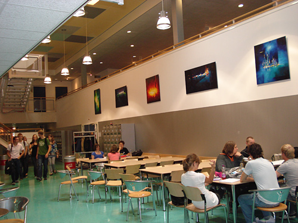

"""
This page shows the information about our company Varpred. In this page we will talk about the start-up of Varpred.
What our goals were and we did to achieve those goals.
"""

<!-- Including header to the page -->
{% extends 'header.html' %}
{% block title %}About VarPred{% endblock %}
{% block content %}

    <!--   Container gives information about Varpred -->
<div class="row container-adjustment">
    <div class="col-sm-6">
        <div class="p-3 mb-2 container rounded-top container-adjustment-about
        grow">
            <h2>About </h2>
        </div>
        <div class="container bg-light">
            <p>What started as a start-up from the Hogeschool Arnhem & Nijmegen
                (HAN) in 2021 has grown considerably in recent months into a
                hard-working company with a strong biological DNA. From
                Nijmegen we support our users in achieving clinical
                significance. VarPred is successful in various market segments
                such as healthcare and the government. We have now grown into
                partners of HAN. We are very proud of that. VarPred strives for
                challenging solutions for the user. Our mission is to help
                users determine their clinical significance. For now, we only
                support a clinical significance predictor to give users a clear
                picture of their health. We do this with the help of Machine
                Learning in combination with Flask.
        </div>
    </div>
    
</div>
{% endblock %}